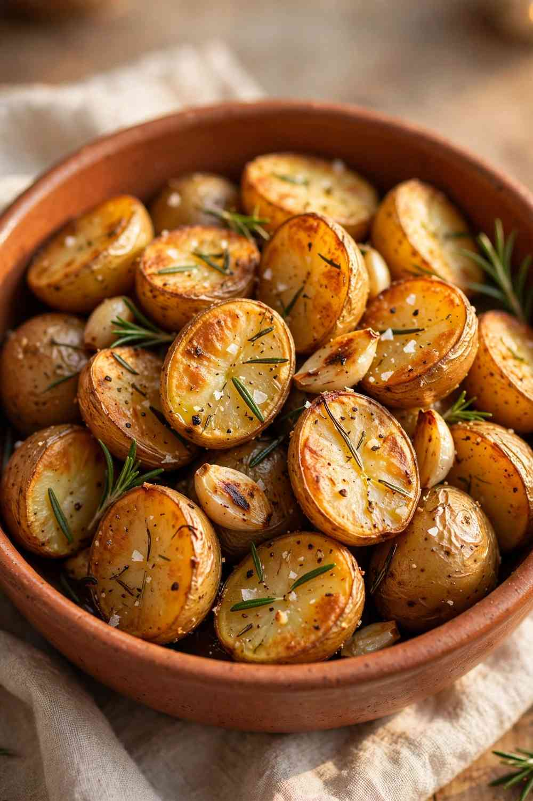
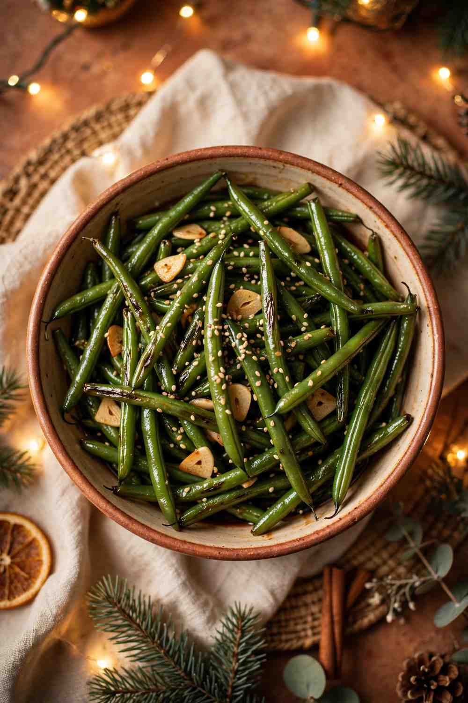
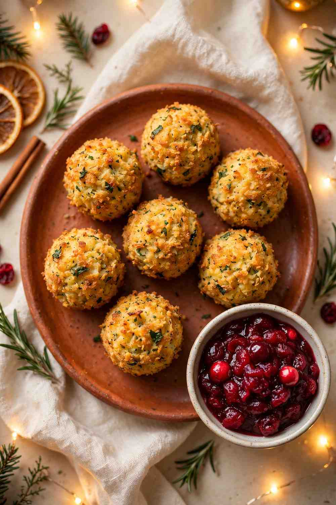

20+ Christmas Air Fryer Recipes for Easy Holiday Cooking
📌 Save to Pinterest
The air fryer is the quiet hero of Christmas cooking: it crisps wings, roasts vegetables, warms appetizers and even bakes small-batch desserts — all while the oven stays free for the turkey and the ham. This roundup gathers twenty air fryer recipes for the holidays, from crispy party bites and golden sides to glazed ham, buttery shrimp and sweet spiced treats. Most of them take 15 minutes or less, so the whole table can come together while the main dish rests.
How to plan your Christmas air fryer menu
The air fryer earns its place at Christmas by taking the small jobs off the oven: appetizers, sides and desserts that cook fast and stay crisp. Plan one batch per dish, work in batches so the basket stays uncrowded, and keep finished dishes warm in a low oven while the next batch cooks. Pick a mix — something crispy, something sweet, something savory — and let the air fryer handle the extras while you enjoy the party.
Good to know: Everything is written in American English, and measurements use US customary units — cups, tablespoons, and Fahrenheit — for cooks in the United States. Always follow safe food-handling guidance, and check labels for allergens when cooking for others.
Food safety: cook poultry to 165°F (74°C), ground meat and sausage to 160°F (71°C), and reheat cooked ham to 140°F (60°C). Cook shrimp until the flesh is pearly and opaque. Check temperatures with a food thermometer.
Appetizers & party bites
Start the party the easy way — these bites go from basket to table in minutes and disappear even faster.
1. Air Fryer Garlic Parmesan Wings

These wings come out of the air fryer shatteringly crisp on the outside and juicy inside, tossed while hot in melted butter, garlic, and salty grated Parmesan. The garlic powder in the rub builds flavor from the start, and a shower of fresh parsley keeps them bright. They are the party bite that disappears first, no deep fryer and no greasy mess.
Ingredients
- 2 lbs chicken wings
- 1 tbsp olive oil
- 1 tsp garlic powder
- 1/2 cup grated Parmesan
- 2 tbsp butter
- parsley
Directions
- Pat the chicken wings dry with paper towels so the skin crisps instead of steaming.
- In a large bowl, toss the wings with the olive oil, garlic powder, and a good pinch of salt and pepper until every wing is evenly coated.
- Preheat the air fryer to 400°F for 3 minutes, then arrange the wings in a single layer in the basket, leaving space between them.
- Air fry for 22 minutes, shaking the basket halfway through so the wings brown evenly on all sides.
- While the wings cook, melt the butter in a small bowl and stir in the grated Parmesan.
- Transfer the hot wings to a clean bowl, pour the butter and Parmesan over them, and toss until every wing is coated.
- Sprinkle chopped parsley over the top and serve at once, while the wings are hot and crisp.
Food safety: cook the chicken wings to 165°F (74°C) — check with a food thermometer.
2. Air Fryer Roasted Brussels Sprouts

Halved Brussels sprouts roast in the air fryer until the outer leaves turn dark and crackly and the centers stay tender and sweet. A toss in balsamic vinegar and honey at the end gives them a sticky, tangy glaze that makes even the skeptics reach for seconds. They are the fastest vegetable on the Christmas table, ready in fifteen minutes.
Ingredients
- 1 lb Brussels sprouts
- 2 tbsp olive oil
- 1 tbsp balsamic vinegar
- 1 tsp honey
- salt
Directions
- Trim the tough stem ends from the Brussels sprouts, pull off any yellowed outer leaves, and cut each sprout in half through the stem.
- In a large bowl, toss the halved sprouts with the olive oil and a good pinch of salt until they are evenly coated.
- Preheat the air fryer to 380°F for 3 minutes, then spread the sprouts in the basket cut-side down in a single layer.
- Air fry for 15 minutes, shaking the basket once halfway through so the sprouts brown evenly.
- Check that the sprouts are crisp at the edges and tender when pierced with a knife; give them 2 more minutes if they are still firm.
- Transfer the hot sprouts to a serving bowl and toss them with the balsamic vinegar and honey while they are still warm, so the glaze coats every piece.
- Taste and add a little more salt if needed, then serve at once.
3. Air Fryer Honey Glazed Ham Bites

Cubes of cooked ham turn sweet, sticky, and lightly caramelized in the air fryer, coated in a glossy glaze of honey, brown sugar, Dijon mustard, and warm cloves. They taste like the best corner of a holiday ham, cut into bite-size pieces. Set them out with toothpicks and watch the bowl empty before dinner is served.
Ingredients
- 1 lb cooked ham
- 3 tbsp honey
- 2 tbsp brown sugar
- 1 tbsp Dijon mustard
- 1/2 tsp cloves
Directions
- Cut the cooked ham into bite-size cubes, about 1 inch across, so they cook evenly and pick up plenty of glaze.
- In a large bowl, whisk together the honey, brown sugar, Dijon mustard, and cloves until smooth.
- Add the ham cubes to the bowl and toss them until every piece is coated in the glaze.
- Preheat the air fryer to 375°F for 3 minutes, then spread the ham cubes in the basket in a single layer.
- Air fry for 10 minutes, shaking the basket halfway through so the cubes glaze evenly and the edges begin to caramelize.
- Check that the ham is hot all the way through and the glaze is sticky and glossy; give it 2 more minutes if the glaze still looks wet.
- Transfer the ham bites to a serving bowl, spoon any glaze left in the basket over the top, and serve warm with toothpicks.
Food safety: reheat the cooked ham to 140°F (60°C).
4. Air Fryer Mozzarella Sticks
These mozzarella sticks fry up golden and crunchy outside while the cheese inside melts into a perfect, stretchy pull. A seasoned breadcrumb coat flavored with Italian herbs keeps them crisp without a drop of oil. Serve them hot with warm marinara for dipping, and make a double batch, because they vanish the moment they hit the table.
Ingredients
- 12 mozzarella sticks
- 1 cup breadcrumbs
- 1/2 cup flour
- 2 eggs
- 1 tsp Italian seasoning
- marinara for dipping
Directions
- Set up three shallow bowls: flour in the first, the eggs beaten in the second, and the breadcrumbs mixed with the Italian seasoning in the third.
- Roll each mozzarella stick in the flour, shaking off the excess, then dip it in the beaten egg, then roll it in the seasoned breadcrumbs, pressing gently so the crumbs stick.
- Arrange the coated sticks on a baking sheet in a single layer and freeze for 30 minutes, so the cheese firms up and the coating sets.
- Preheat the air fryer to 390°F for 3 minutes, then lightly spray the basket with cooking spray and place the sticks in a single layer with space between them.
- Air fry for 6 minutes, until the coating is deep golden and crisp. Do not cook longer, or the cheese will burst out.
- Lift the sticks out carefully with tongs and let them rest for 1 minute so the cheese settles.
- Serve at once with warm marinara sauce for dipping.
5. Air Fryer Cinnamon Sugar Donut Holes
Soft, warm donut holes made from biscuit dough puff up golden in the air fryer, then get brushed with melted butter and rolled in cinnamon sugar until every bite is sweet and spiced. They taste like a Christmas fair in miniature, tender inside with a crackly sugared coat. Pile them in a bowl and serve them while they are still warm.
Ingredients
- 1 can refrigerated biscuit dough
- 1/4 cup melted butter
- 1/2 cup sugar
- 1 tsp cinnamon
Directions
- Open the can of biscuit dough and separate the biscuits on a clean work surface.
- Cut each biscuit into quarters, then roll each piece between your palms into a smooth ball.
- In a small bowl, stir together the sugar and cinnamon until evenly mixed, and set the melted butter beside it.
- Preheat the air fryer to 350°F for 3 minutes, then lightly spray the basket with cooking spray and arrange the dough balls in a single layer with space between them.
- Air fry for 8 minutes, shaking the basket halfway through, until the donut holes are puffed and golden brown all over.
- While the donut holes are still hot, brush each one with melted butter, then roll it in the cinnamon sugar until coated on all sides.
- Pile the finished donut holes in a bowl and serve warm, while the sugar is still crackly and the centers are soft.
Sides & savory bites
The air fryer handles the sides too, freeing the oven for the turkey and the ham.
6. Air Fryer Roast Potatoes

Baby potatoes roast in the air fryer until their skins turn crisp and golden and their insides stay soft and fluffy. Garlic powder and rosemary give them a savory, holiday flavor that goes with everything on the Christmas table. They are the easiest side dish here, with just five minutes of hands-on work and no oven space needed.
Ingredients
- 2 lbs baby potatoes
- 2 tbsp olive oil
- 1 tsp garlic powder
- 1 tsp rosemary
- salt
Directions
- Scrub the baby potatoes clean and pat them dry, then cut each one in half so the cut sides can crisp up.
- In a large bowl, toss the halved potatoes with the olive oil, garlic powder, rosemary, and a generous pinch of salt until evenly coated.
- Preheat the air fryer to 400°F for 3 minutes, then spread the potatoes in the basket cut-side down in a single layer.
- Air fry for 20 minutes, shaking the basket halfway through so the potatoes brown evenly on all sides.
- Check that the potatoes are crisp outside and tender when pierced with a knife; give them 3 more minutes if the centers are still firm.
- Transfer the potatoes to a serving bowl, taste, and add a little more salt if needed.
- Serve hot, straight from the air fryer, while the skins are at their crispiest.
7. Air Fryer Bacon-Wrapped Dates

Sweet, soft dates stuffed with creamy goat cheese and wrapped in smoky bacon are the perfect sweet-salty party bite. The bacon crisps in the air fryer while the cheese melts into the date, and the whole thing is just one rich, sticky mouthful. They look impressive on a platter and take only minutes to put together.
Ingredients
- 24 pitted dates
- 12 slices bacon
- 1/4 cup goat cheese
Directions
- Cut each slice of bacon in half crosswise so you have 24 short pieces, one for each date.
- Gently open each pitted date and spoon a small amount of goat cheese inside, about half a teaspoon per date, then press the date closed around the cheese.
- Wrap each stuffed date with a half slice of bacon, spiraling it around the date so the cheese is covered.
- Push a toothpick through each wrapped date to hold the bacon in place.
- Preheat the air fryer to 375°F for 3 minutes, then arrange the dates in the basket seam-side down in a single layer.
- Air fry for 10 minutes, until the bacon is crisp and browned all the way around.
- Lift the dates out with tongs, let them rest for 2 minutes so the cheese settles, and serve warm on a platter.
Food safety: cook the bacon until crisp.
8. Air Fryer Green Beans with Garlic

Fresh green beans turn tender-crisp in the air fryer, with lightly blistered edges and a garlicky soy finish. A sprinkle of sesame seeds adds crunch and a nutty note. They are a light, bright side that balances the rich holiday dishes, and they cook in ten minutes while the rest of dinner rests.
Ingredients
- 1 lb green beans
- 2 tbsp olive oil
- 3 garlic cloves
- 1 tbsp soy sauce
- sesame seeds
Directions
- Trim the stem ends from the green beans and rinse them, then pat them completely dry so they crisp instead of steaming.
- In a large bowl, toss the beans with the olive oil and a pinch of salt until evenly coated.
- Mince the garlic cloves and set them aside with the soy sauce and sesame seeds.
- Preheat the air fryer to 390°F for 3 minutes, then spread the beans in the basket in a single layer, leaving room for the hot air to move.
- Air fry for 10 minutes, shaking the basket once halfway through, until the beans are tender-crisp with lightly blistered spots.
- Transfer the hot beans to a serving bowl and toss them at once with the minced garlic and soy sauce, so the garlic softens in the heat.
- Sprinkle sesame seeds over the top and serve right away.
9. Air Fryer Stuffing Balls

Leftover stuffing gets a second life as golden, handheld balls with crisp outsides and soft, savory centers. Bound with egg and breadcrumbs and served with cranberry sauce, they taste like the best part of the holiday table in one bite. They are the clever way to use up stuffing, and guests will ask for the recipe.
Ingredients
- 4 cups prepared stuffing
- 2 eggs
- 1/2 cup breadcrumbs
- 1/4 cup cranberry sauce
Directions
- In a large bowl, combine the prepared stuffing with the eggs and breadcrumbs, mixing with your hands until the mixture holds together when squeezed.
- If the mixture feels too wet to shape, add a spoonful more breadcrumbs; if it feels dry, add a splash of water.
- Scoop the mixture and roll it into balls about the size of a golf ball, pressing firmly so they hold their shape.
- Preheat the air fryer to 375°F for 3 minutes, then lightly spray the basket with cooking spray and arrange the stuffing balls in a single layer with space between them.
- Air fry for 12 minutes, shaking the basket gently halfway through, until the balls are deep golden and crisp all over.
- Let the stuffing balls rest in the basket for 2 minutes so they firm up before lifting them out.
- Serve warm on a platter with the cranberry sauce alongside for dipping.
10. Air Fryer Cranberry Brie Bites

Buttery puff pastry cups hold melted brie and tart cranberry sauce, baked in the air fryer until the pastry is puffed and golden and the cheese runs soft. They are rich, sweet, tart, and flaky all at once, and they look like something from a fancy bakery. Set them out warm and watch them disappear.
Ingredients
- 1 sheet puff pastry
- 8 oz brie
- 1/2 cup cranberry sauce
- 1 egg for wash
Directions
- Thaw the puff pastry according to the package directions, then roll it out lightly on a floured surface and cut it into 12 even squares.
- Beat the egg in a small bowl to make the egg wash.
- Press each pastry square into a cup of a muffin tin, letting the corners stick up over the edges.
- Cut the brie into 12 small cubes and place one cube in each pastry cup, then spoon about 2 teaspoons of cranberry sauce over the brie.
- Brush the exposed pastry edges with the beaten egg wash.
- Air fry at 375°F for 10 minutes, in batches if needed, until the pastry is puffed, golden brown, and crisp.
- Let the bites cool in the tin for 3 minutes, then lift them out carefully and serve warm, while the brie is still soft.
Crowd favorites
The recipes everyone asks for again — fries, pigs in a blanket, glazed carrots, cookies and shrimp.
11. Air Fryer Sweet Potato Fries
Sweet potato fries come out of the air fryer crisp at the edges and soft in the middle, coated in a light cornstarch crust with smoky paprika. The cornstarch is the trick: it draws out moisture so the fries actually crunch. Serve them hot with aioli for dipping, and make plenty, because they go fast.
Ingredients
- 2 sweet potatoes
- 2 tbsp cornstarch
- 2 tbsp olive oil
- 1 tsp paprika
- salt
Directions
- Peel the sweet potatoes and cut them into even fries, about 1/4 inch thick, so they cook at the same rate.
- Soak the cut fries in cold water for 10 minutes, then drain and pat them completely dry with paper towels.
- In a large bowl, toss the fries with the cornstarch until lightly coated, then add the olive oil, paprika, and a good pinch of salt and toss again.
- Preheat the air fryer to 380°F for 3 minutes, then spread the fries in the basket in a single layer, leaving space between them. Work in batches if needed.
- Air fry for 18 minutes, shaking the basket twice during cooking so the fries crisp evenly on all sides.
- Check that the fries are golden and crisp at the edges; give them 2 more minutes if any pieces still look pale or soft.
- Transfer the fries to a bowl, taste, and add a little more salt if needed. Serve hot with aioli for dipping.
12. Air Fryer Pigs in a Blanket
Cocktail sausages wrapped in buttery crescent dough bake up golden and flaky in the air fryer, with a sprinkle of sesame seeds on top for crunch. They are the party classic that never fails, ready in eight minutes with almost no work. Set out a bowl of mustard for dipping and let guests help themselves.
Ingredients
- 1 can crescent roll dough
- 16 cocktail sausages
- 1 egg
- sesame seeds
Directions
- Open the can of crescent roll dough and unroll it on a clean work surface, pressing the perforations together to make one large rectangle.
- Cut the dough into 16 even triangles, each about the right size to wrap one sausage.
- Beat the egg in a small bowl to make the egg wash.
- Place a cocktail sausage at the wide end of each triangle and roll it up snugly toward the point, pressing the tip down to seal.
- Arrange the wrapped sausages in the air fryer basket seam-side down, leaving space between them, and brush the tops with the beaten egg.
- Sprinkle sesame seeds over the brushed tops.
- Air fry at 350°F for 8 minutes, until the dough is puffed and deep golden brown. Serve warm with mustard for dipping.
Food safety: heat the cocktail sausages until steaming hot throughout.
13. Air Fryer Roasted Carrots with Honey
Baby carrots roast in the air fryer until tender and lightly caramelized at the edges, then get tossed in honey and thyme for a glossy, sweet-savory glaze. They taste like candy and vegetables at the same time, and the thyme keeps the sweetness in balance. Fifteen minutes from basket to table, with no oven space needed.
Ingredients
- 1 lb baby carrots
- 2 tbsp honey
- 1 tbsp olive oil
- 1 tsp thyme
- salt
Directions
- Rinse the baby carrots and pat them dry, trimming any long green tops to about half an inch.
- In a large bowl, toss the carrots with the olive oil and a good pinch of salt until evenly coated.
- Preheat the air fryer to 380°F for 3 minutes, then spread the carrots in the basket in a single layer.
- Air fry for 15 minutes, shaking the basket once halfway through so the carrots brown evenly.
- Check that the carrots are tender when pierced with a knife and lightly caramelized at the edges; give them 3 more minutes if they are still firm.
- Transfer the hot carrots to a serving bowl and toss them at once with the honey and thyme, so the honey melts into a glaze.
- Taste and add a little more salt if needed, then serve warm.
14. Air Fryer Christmas Cookies

Small-batch cookies bake up soft and chewy in the air fryer, studded with chocolate chips and finished with red and green sprinkles for the holidays. The small batches mean fresh, warm cookies on demand, straight from the basket. They are the easiest way to bake a few dozen cookies without heating up the whole oven.
Ingredients
- 1 cup flour
- 1/2 cup butter
- 1/2 cup sugar
- 1 egg
- 1 tsp vanilla
- 1/2 cup chocolate chips
- sprinkles
Directions
- In a large bowl, cream the softened butter and sugar together until light and fluffy, about 2 minutes.
- Beat in the egg and vanilla until smooth, then stir in the flour until just combined. Do not overmix, or the cookies will turn tough.
- Fold in the chocolate chips with a spatula until they are spread evenly through the dough.
- Scoop the dough into small balls, about 1 tablespoon each, and flatten them slightly with your palm.
- Preheat the air fryer to 320°F for 3 minutes, then line the basket with parchment and arrange the dough balls in a single layer with space between them.
- Air fry for 8 minutes, in batches, until the cookies are set at the edges and lightly golden on top. They will firm up as they cool.
- Let the cookies cool in the basket for 3 minutes, then move them to a rack and add the sprinkles while they are still warm so they stick. Serve once cool.
15. Air Fryer Garlic Butter Shrimp

Plump shrimp cook in just eight minutes, bathed in melted butter, garlic, and lemon juice, then finished with parsley and a pinch of red pepper flakes. They come out tender and juicy, with a rich, garlicky sauce that begs for crusty bread. It is the fastest elegant dish on this list, and it tastes like a special occasion.
Ingredients
- 1 lb shrimp
- 3 tbsp butter
- 3 garlic cloves
- 1 tbsp lemon juice
- parsley
- red pepper flakes
Directions
- Peel and devein the shrimp, leaving the tails on if you like, then pat them completely dry with paper towels.
- Melt the butter in a small bowl and stir in the minced garlic and lemon juice.
- In a large bowl, toss the shrimp with the melted butter mixture until every piece is coated.
- Preheat the air fryer to 400°F for 3 minutes, then spread the shrimp in the basket in a single layer.
- Air fry for 8 minutes, shaking the basket once halfway through, until the shrimp are pink and curled into a C shape.
- Transfer the shrimp to a serving bowl and pour any buttery juices from the basket over the top.
- Sprinkle chopped parsley and red pepper flakes over the shrimp and serve at once, while they are hot and juicy.
Food safety: cook the shrimp until the flesh is pearly and opaque.
Sweet treats & holiday extras
Finish with something sweet, or something a little different — the air fryer does desserts too.
16. Air Fryer Cauliflower Bites
Cauliflower florets get a crunchy, spiced breadcrumb coat with paprika and garlic powder, then crisp up in the air fryer until golden all over. Inside they stay tender and sweet, and ranch dip cools the spice. They are the vegetarian bite that meat-eaters reach for too, and they make a great lighter option on a rich holiday table.
Ingredients
- 1 head cauliflower
- 1/2 cup flour
- 1/2 cup milk
- 1 cup breadcrumbs
- 1 tsp paprika
- 1 tsp garlic powder
Directions
- Cut the cauliflower into bite-size florets, about 1 1/2 inches across, so they cook evenly.
- Set up three shallow bowls: flour in the first, milk in the second, and breadcrumbs mixed with the paprika and garlic powder in the third.
- Dip each floret in the flour, shaking off the excess, then in the milk, then roll it in the seasoned breadcrumbs, pressing gently so the crumbs stick.
- Preheat the air fryer to 390°F for 3 minutes, then lightly spray the basket with cooking spray and arrange the florets in a single layer with space between them.
- Air fry for 15 minutes, shaking the basket once halfway through, until the coating is deep golden and crisp.
- Check that a floret is tender inside when pierced with a knife; give them 2 more minutes if they are still firm.
- Serve hot with ranch dressing for dipping.
17. Air Fryer Apple Chips with Cinnamon

Paper-thin apple slices crisp up in the air fryer into sweet, crunchy chips dusted with cinnamon sugar. A squeeze of lemon juice keeps them from browning and adds a bright note. They are the lightest sweet on the table, good on their own or crumbled over ice cream, and they make the kitchen smell like an orchard.
Ingredients
- 2 apples
- 1 tsp cinnamon
- 1 tbsp sugar
- lemon juice
Directions
- Core the apples and slice them as thin as you can, about 1/16 inch thick, using a mandoline or a very sharp knife. Thin slices are what make them crisp.
- In a large bowl, toss the apple slices gently with a squeeze of lemon juice so they are lightly coated and will not brown.
- In a small bowl, stir together the cinnamon and sugar until evenly mixed.
- Sprinkle the cinnamon sugar over the apple slices and toss gently so both sides are dusted.
- Preheat the air fryer to 300°F for 3 minutes, then arrange the slices in the basket in a single layer without overlapping.
- Air fry for 15 minutes, flipping each slice once halfway through, until the chips are crisp and lightly golden at the edges.
- Let the chips cool in the basket for 5 minutes, so they crisp up fully as they cool, then serve at once or store in an airtight container.
18. Air Fryer Turkey Meatballs

Juicy turkey meatballs seasoned with sage cook up golden in the air fryer, then get tossed in warm cranberry sauce for a sweet-tart holiday glaze. A spoonful of soy sauce in the glaze adds a savory depth that keeps them from tasting too sweet. They are the crowd-pleaser that works as an appetizer or a main.
Ingredients
- 1 lb ground turkey
- 1/2 cup breadcrumbs
- 1 egg
- 1 tsp sage
- 1/2 cup cranberry sauce
- 1 tbsp soy sauce
Directions
- In a large bowl, combine the ground turkey, breadcrumbs, egg, and sage, mixing gently with your hands just until everything is evenly blended. Do not overwork the mixture, or the meatballs will turn tough.
- Roll the mixture into meatballs about 1 1/2 inches across, wetting your hands lightly so the mixture does not stick.
- Preheat the air fryer to 375°F for 3 minutes, then lightly spray the basket with cooking spray and arrange the meatballs in a single layer with space between them.
- Air fry for 12 minutes, shaking the basket once halfway through, until the meatballs are browned on the outside and cooked through.
- While the meatballs cook, warm the cranberry sauce with the soy sauce in a small saucepan over low heat, stirring until smooth and glossy.
- Transfer the hot meatballs to a bowl and pour the warm cranberry sauce over them, tossing gently until every meatball is glazed.
- Serve at once, garnished with a little fresh sage if you like, while the meatballs are hot and the glaze is sticky.
Food safety: cook the turkey meatballs to 165°F (74°C) — check with a food thermometer.
19. Air Fryer Roasted Chestnuts

Fresh chestnuts roast in the air fryer until their shells split open and the nuts inside turn sweet, soft, and nutty. A sprinkle of salt is all they need. They are the most old-fashioned treat on this list, the one that smells like Christmas itself, and they are easier than the oven version by far.
Ingredients
- 1 lb chestnuts
- water for soaking
- salt
Directions
- Rinse the chestnuts and pat them dry, then use a sharp knife to score a deep X on the flat side of each one, cutting through the shell.
- Place the scored chestnuts in a bowl, cover them with water, and soak for 10 minutes so the shells steam open instead of bursting.
- Drain the chestnuts well and pat them dry.
- Preheat the air fryer to 375°F for 3 minutes, then spread the chestnuts in the basket in a single layer, cut-side up.
- Air fry for 15 minutes, shaking the basket once halfway through, until the shells have curled open at the scores and the nuts look golden.
- Transfer the chestnuts to a bowl and cover it with a clean towel for 5 minutes, so the steam loosens the shells.
- Peel the chestnuts while they are still warm, sprinkle with salt, and serve at once.
20. Air Fryer Gingerbread Cake Bites

Spiced gingerbread cake bakes into soft, tender bites in the air fryer, warm with ginger, cinnamon, and molasses. A drizzle of powdered-sugar glaze melts into the tops and sets into a sweet crackle. They are the easiest holiday dessert here, made from a box mix but tasting entirely homemade.
Ingredients
- 1 box gingerbread cake mix
- eggs and oil as directed
- 1 cup powdered sugar
- 2 tbsp milk
- 1/2 tsp vanilla
Directions
- Prepare the gingerbread cake batter in a large bowl exactly as directed on the box, using the eggs and oil called for.
- In a small bowl, whisk together the powdered sugar, milk, and vanilla until smooth and pourable, adding a drop more milk if the glaze is too thick.
- Lightly grease silicone molds or small ramekins that fit in the air fryer basket.
- Spoon the batter into the greased molds, filling each about two-thirds full so the bites have room to rise.
- Preheat the air fryer to 320°F for 3 minutes, then place the molds in the basket in a single layer.
- Air fry for 12 minutes, until the bites are risen and spring back when lightly pressed, and a toothpick inserted in the center comes out clean.
- Let the bites cool in the molds for 5 minutes, then turn them out onto a plate and drizzle the powdered-sugar glaze over the tops. Serve warm or at room temperature.
Air fryer tips for Christmas
Do not overcrowd the basket — food crisps best in a single layer with room for hot air to move. Shake the basket halfway through cooking so everything browns evenly. Cook in batches and keep finished food warm in a low oven while the next batch cooks. Pat food dry before seasoning, and brush or spray a little oil on anything that should turn golden. Let the air fryer preheat for a few minutes when a recipe needs a hot start, and check food a couple of minutes early — small batches cook fast.
Related articles
More roundups from the same table:
- 25+ Christmas Side Dishes for Your Holiday Table — roasted vegetables, creamy potatoes, stuffing and cranberry sauce.
- 35+ Easy Christmas Appetizers for a Crowd — dips, bites, cheese boards and warm starters for your holiday party.
- 25+ Christmas Breakfast Recipes for a Cozy Holiday Morning — casseroles, pancakes, cinnamon rolls and make-ahead bakes.
- 30+ Christmas Cookie Recipes Everyone Will Love — classic, chocolate, spiced, filled and decorated cookies.
Keep exploring
- Browse the Air Fryer Recipes roundups — lighter, crisp dishes from the air fryer.
- Browse all six categories — breakfast, lunch and dinner, desserts, air fryer, healthy recipes, and appetizers.
- More about the kitchen — what The Tasty Recipe Co is and how it works.
About The Tasty Recipe Co: Learn how we research, organize and review our food collections — see our About Us and Editorial Policy pages.
Recipe results can vary with ingredients, equipment, and technique. See our Disclaimer for food-safety and allergy notes.